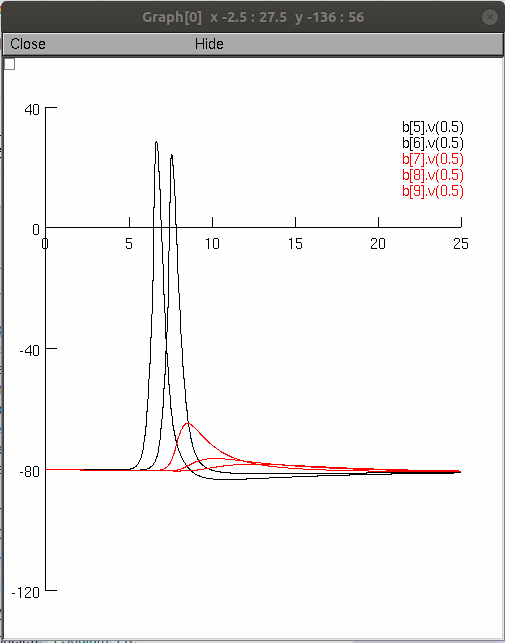
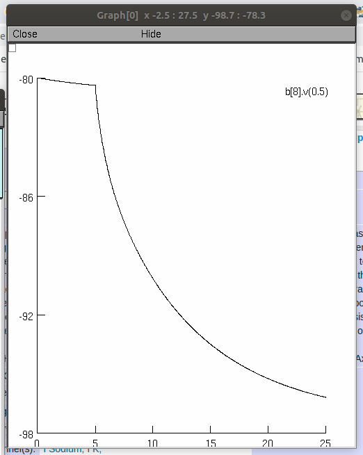
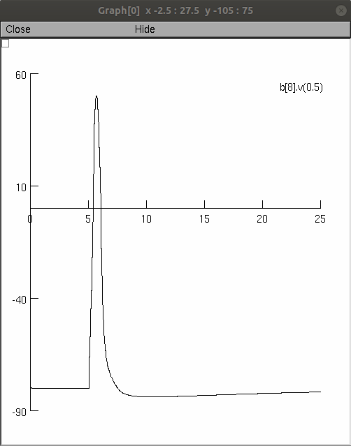
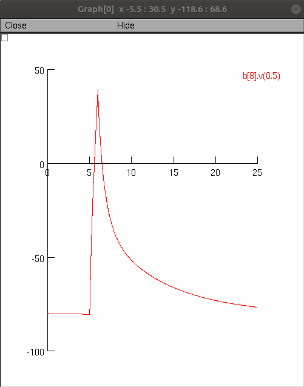

This is the readme for the modeling in the paper:
Ohura S, Kamiya H (2018) Sodium Channel-Dependent and -Independent Mechanisms Underlying Axonal Afterdepolarization at Mouse Hippocampal Mossy Fibers. eNeuro http://dx.doi.org/10.1523/ENEURO.0254-18.2018
whos model was the Hodgkin-Huxley type model of the set of sodium, potassium, and leakage channels found in the hippocampal mossy fiber boutons as described in
Engel D, Jonas P (2005) Presynaptic action potential amplification by voltage-gated Na+ channels in hippocampal mossy fiber boutons. Neuron 45:405-17 http://dx.doi.org/10.1016/j.neuron.2004.12.048
This model was contributed by H Kamiya.
Two illustrations show the simulation configuration in which sodium and potassium conductance was omitted from the axon and the bouton compartments shown in red.
To run the simulations, follow these steps:
Here are screenshots of pressing the successive buttons available in the GUI that is presented when you start the simulation:
   Questions about this model should be directed to kamiya@med.hokudai.ac.jp.